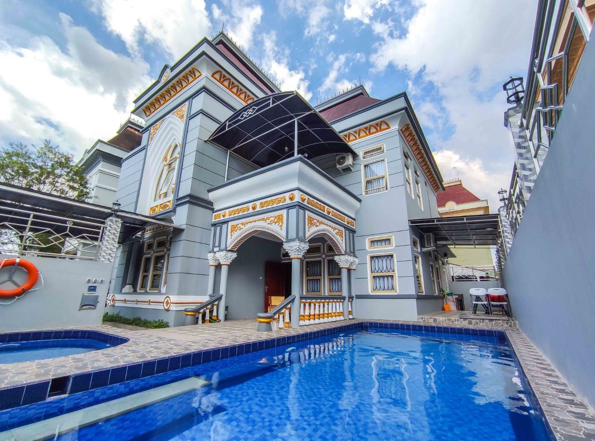

Pemrograman web adalah salah satu mata kuliah di program studi Teknik Informatika, Fakultas Teknik dan Sains, Universitas Ibn Khaldun yang ada pada semester IV. Mata kuliah ini adalah mata kuliah wajib yang harus diambil oleh seluruh mahasiswa Program Studi
Bahasa Pemrograman yang saya sukai adalah :
Hobby yang saya sukai adalah :